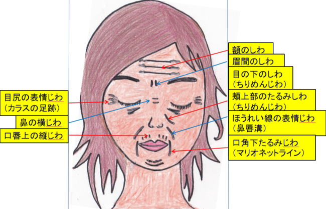
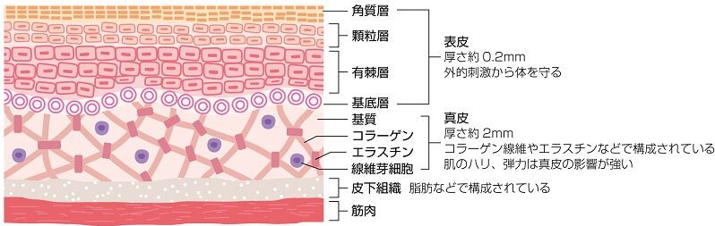
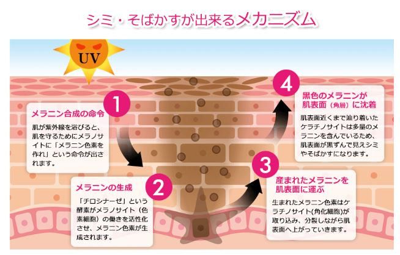
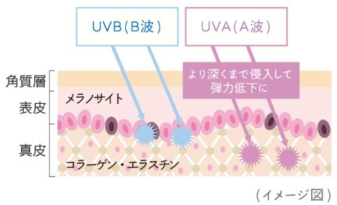
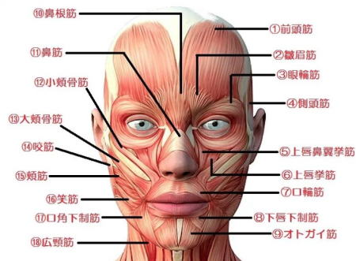
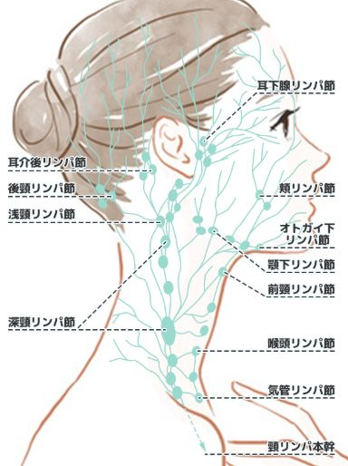

美容鍼を行うこと男性も女性も肌質が変化して若く見られるようになります。少しでもかっこよく、美しく見られたくありませんか？
電話でのご予約・お問い合わせはTEL.03-6413-7803
〒154-0014 東京都世田谷区新町3-21-1さくらウェルガーデン３F
クレオパトラ美容鍼（顔鍼）Cosmetic Acupuncture
クレオパトラ美容鍼（美顔鍼）とは
【どんな鍼を使うの？】
当院でお顔の施術に使う鍼は、世界一細い鍼を使用しています。
直径が0.12mmと極細です。
これは髪の毛と蚊の鍼の中間位の細さです。
もちろん全ての鍼は単回使い捨てですので、衛生面においてもご安心いただけます。

【鍼は痛くないの？】
ほとんどの方は痛みを感じません。肌が敏感な方でも少しチクッとする程度です。
また痛みの感じ方はもともとの体質や、その日の体調、ストレスの度合いなどによっても変わってきます。
クレオパトラ美容鍼に期待される効果
【血流改善】
クレオパトラ美容鍼には全身の血流を促進する作用があります。
お顔の血行不良は、たるみ、くすみ、むくみ、目の下のくまなど、様々なトラブルの原因になります。
お顔とその周囲への鍼灸施術により血行を改善すると、こうしたトラブルのケアと予防ができます。
【新陳代謝改善】
クレオパトラ美容鍼には新陳代謝を促進する作用があります。
特にお顔のトラブルは、お肌のターンオーバーの乱れが大きな原因の１つとなっています。
鍼で新陳代謝を促進し、ターンオーバーの乱れを調整すれば、様々なトラブルの改善が期待できます。
【表情筋への刺激】
鍼灸、特に鍼施術は筋肉に直接アプローチできる施術法です。
表情筋も通常の筋肉と同様、加齢とともに筋力が低下します。
それにより表情筋に直接くっついている皮膚も下がっていってしまい、シワやたるみが生まれるのです。
こうしたシワ、たるみの原因ともなる表情筋の過度なゆるみや緊張を、筋肉への鍼刺激で調節していきます。
美容鍼はこんなお悩みのある方におススメです
・シミ（紫外線、加齢、ホルモンバランスの乱れ、疲労、摩擦などの刺激…）
・くすみ（血行不良、乾燥、加齢、ホルモンバランスの乱れ…）
・そばかす（遺伝性、紫外線、ホルモンバランスの変化…）
・ニキビ（白ニキビ、赤ニキビ）、ニキビ痕
・シワ （ほうれい線、眉間のシワ、目尻のシワ、額の横シワ、目の下のシワ…等）
・たるみ（目の下のたるみ、頬上部のたるみ、口角の下のたるみ…等）
・毛穴ケア（肌のたるみ、乾燥、開き毛穴、つまり黒ずみ毛穴、）
・リフトアップ

お顔の構造：皮膚、筋肉、血管、神経
①皮膚の構造
皮膚は大きく分けて、表皮・真皮・皮下組織という3層からできています。   
【お肌のターンオーバーは表皮で起こる】
ターンオーバーは英語で「Turn Over」もともとは「入れ替わる」「回転する」という意味があります。
そのため日本ではお肌の「新陳代謝」、「生まれ変わり」の意味で使われています。
実はターンオーバーは、厚さ約0.2ミリしかない薄い表皮の部分で起きています。
まず、表皮の一番下にある「基底層」で新しい細胞が生まれます。
基底層で生まれた細胞は、有棘層→顆粒層→角質層と徐々に押し上げられていきます。
最後に角質層まで達するとバリア機能を果たします。そして最後は垢となってはがれ落ちるのです。
表皮ではこのように日々、新しい細胞が誕生し、古い細胞が役目を終えて去っていくというサイクルを繰り返しています。
この1サイクルがターンオーバーの期間です。
ターンオーバーの1サイクルは一般的に、年齢を重ねるにつれ時間がかかるようになります。
新陳代謝が低下するめ、20歳代の女性では28日程度で行われていたものが、30～40歳代では約45日程度あるいはそれ以上といわれています。
さらに、50代、60代、70代になれば一層、ターンオーバーは遅くなります。
年齢とともに傷の治りが遅くなったり、シミができやすくなったりするのは、このためなのです。
【メラノサイト】
表皮にあるメラノサイトという細胞が「メラニン」と呼ばれる色素を産生します。
紫外線を長時間浴びたり、強い紫外線に無防備でいたりすると、それに対応するためメラノサイトが活性化し、メラニン生成が増えます。
【メラニンの働きとUV（紫外線）】
シミの原因で悪者と思われがちなメラニンですが、メラニンの最も重要な役割はUV（紫外線）から体を守ることです。
メラニンがUVを吸収してくれることで、日光障害や悪性腫瘍の発生を防ぎます。
【お肌の弾力と保湿の要は真皮】
真皮は、厚さ約2ミリ。主にコラーゲン繊維やエラスチンなどで構成されています。
・コラーゲン
コラーゲンはお肌の真皮だけではなく、じつは骨、関節などの軟骨、目の水晶体や角膜などにも含まれています。 そのため美肌のためだけでなく、骨粗しょう症や関節痛を防ぎ、健康な目や髪、爪、血管を保ち、更に傷の治癒等の免疫力アップなど、人体に欠かせない重要な成分なのです。
皮膚では水分以外の成分のなんと約70% がコラーゲンです。
コラーゲンは肌に弾力を与える、水分を抱え込みみずみずしさを保つ」といった働きがあるため美肌にとって大変重要です。
加齢や紫外線、ストレスなどの影響から、肌の新陳代謝が落ちるとコラーゲンも代謝の速度が衰えてしまいます。
そうなると、コラーゲンの弾力性や水分を保つ保水力が】弱くなり、肌は乾燥し、シワ、たるみなどお肌老化の原因となります。
・エラスチン
エラスチンは、コラーゲンと共に網目状にネットワークを形成しています。
エラスチンの主な役割はコラーゲンの線維をつなぎ止めるようにして絡みつき、肌に弾力を与える事です。
皮膚や血管などに多く存在しているタンパク質の一種で、ゴムのように伸縮する性質があり、その性質から肌に柔軟性を与えています。
コラーゲンもエラスチンも、20代をピークにその量は減少していきます。
肌のシワやたるみといった肌トラブルの影響が出ます。真皮の伸縮活動を活発にして、お肌の弾力性と保湿性を良い状態に保っていくことが、肌を若々しく保つポイントとなります。
【UV（紫外線）】
UV（紫外線）にはUV-B（紫外線B波）と、UV-A（紫外線A波）があります。
地表に届くUVの約10％はUV-B、90％はUV-Aです。
表皮でシミの原因となるUV-B
UV-Bには、細胞とくにDNAに対する障害作用があります。
メラニン色素が多い（肌の黒い）人種であるほど、メラニンがUVを吸収してくれて、紫外線による皮膚がんの発生は少なくなります。
UV-Bは表皮まで達し、屋外での日焼けの主な原因となります。そのため「レジャー紫外線」とも呼ばれます。
たくさん浴びるとすぐに赤く炎症を起こし、メラニンを作らせ、シミや色素沈着の原因になります。
帽子や日傘を使うなど、極力直射日光に当たらないように心がけるだけで、ある程度防御することができます。
真皮でシワの原因となるUV-A
UV-AはBよりも波長が長く、雲や、家・車の窓ガラスも透過します。
日常生活のなかで気付かないうちに浴びている事が多いため「生活紫外線」とも呼ばれます。
UV-Aを浴びても、UV-Bのような肌への急激な変化はみられません。しかし肌の奥深く、真皮まで到達し、じわじわと肌に様々な影響を及ぼします。
例えば、真皮にあるコラーゲンを変性させ、しわやたるみの原因になるなど、長い時間をかけ、気付かない間にお肌に悪影響を及ぼします。
晴れの日に屋外にいる時に、シミの原因となるUV-Bを防ぐだけではなく、曇りの日や屋にいる時にも、シワやたるみを引き起こすUV-Aに気をつけることが重要です。
②お顔の筋肉
顔面の筋肉には「深層筋」と「表情筋」に分けられます。 
インナーマッスルとも呼ばれる深層筋が、その上(表層)にある表情筋を支えているのです。
顔面の表情筋は小さなものも入れると約20種。目，鼻，口，耳の開口部に群がり，大部分は頭骨から起こって顔面の皮膚に終わります。
・深層筋
咀嚼(そしゃく)筋：咬筋、側頭筋
・表情筋
前頭筋、眼輪筋、皺眉 (しゅうび) 筋
大頬骨筋、小頬骨筋、頬筋
口輪筋、口角挙筋、笑筋
オトガイ筋
・その他、お顔に関連する筋肉
前頭筋
広頚筋
胸鎖乳突筋
深層筋が衰えると、表情筋が支えられなくなります。
表情筋が衰えると、その上にある脂肪や皮膚を支えられなくなります。更に、お肌への血流や栄養も行き渡りにくくなります。
つまり表情筋と深層筋の衰えはたるみやシワだけではなく、血行不良や栄養不足によるくすみやシミの原因ともなります。
美容鍼では、こうしたお顔の表情筋・深層筋と周辺の筋肉にアプローチしていきます。
鍼の刺激によって筋肉の働きを活性化させ、リフトアップを促し、また過緊張にある筋肉は緩ませる効果があります。
③お顔の血管
前頭動静脈、浅側頭動静脈（こめかみ）、顔面動静脈
お顔に鍼施術をした後は、お顔の血流が改善されます。血流が改善されると、お顔の血色が良くなり、新陳代謝も上がります。
更にリンパの流れも促進されます。血流とリンパの流れが改善されることが、ターンオーバーの乱れを調整する事につながります。
④お顔の神経
顔面神経と三叉神経
お顔は、動きをつかさどる運動神経の「顔面神経」と、痛みなどの感覚をつかさどる知覚神経の「三叉神経」が支配しています。
（顔面の痛みでよく言われる「顔面神経痛」は、正確には「三叉神経痛」と言います）
美容鍼では、お顔の運動をつかさどる「顔面神経」にアプローチしていきます。
顔面の表情筋は小さなものも入れると約20種ですが、その全ての動きが顔面神経の支配を受けます。
⑤お顔のリンパ 
リンパには廃物や余分な水分を回収する働きがあります。
そのため「体の下水管」とも表現され、血管と同様、全身に網の目のように張り巡らされています。
静脈に入れなかった大きなサイズの老廃物や、余分な水分、細菌、異物などはリンパが回収しています。
老廃物が排出されずに溜まってしまうと、その老廃物が肌に負担をかけ、肌荒れやくすみなどの肌トラブルを引き起こします。
「美肌のためにリンパの流れを良くしましょう」と言われるのはこのためです。
リンパは「リンパ節」といういわば関所のような役割の構造を持っています。
お顔に関連する主なリンパ節には、耳下腺リンパ節、頬リンパ節、オトガイ下リンパ節、顎下リンパ節、浅頚リンパ節、深頚リンパ節などがあります。
リンパには一定の流れがあります。お顔の左右で下図のようなリンパ節などのルートを通り、鎖骨の下あたりで静脈に流れ込みます。
そのため、リンパを流す際は基本的には、お顔の中心から外側へ耳や顎に向かって、そして耳や顎の角からは首筋に沿って首の付け根へと流します。
リスクはあるの？
お顔の皮膚は体の皮膚よりも薄い方が多いため、お顔は体より鍼の刺激に対して敏感になりやすいともいえます。
しかし前述のように、当院の鍼は極細なので、刺してもチクっというくらいの刺激です。
血管壁のもろさにも個人差があります。特に目の周りは細かな毛細血管が多いため、内出血のリスクも高まります。
鍼をしてから小さな内出血などが起きる可能性はゼロではありません。そういう場合は、施術直後にすぐ圧迫し、多くの方は約一週間、長くても二週間で消えます。
鍼灸施術後は、のぼせた感覚があったり、軽い頭痛が起きたりすることもありますが、これは好転反応といって、免疫力があがっている証拠です。
このような反応が出た場合はご遠慮なくお知らせください。
セルフケア
美容鍼灸は、あくまでお肌の本来持つ自然治癒力を高めることで、お肌やお顔の筋肉など体が本来持っている美への力を引き出すものです。
その力を最大限引き出すためには、施術だけ受けていればいいというわけではありません。
受け身ではなく、ご自身の身体を積極的に知り、日々改善していくことを心がけましょう。
そのためには、美容鍼灸と並行して生活習慣を整え、お家でのセルフケアを毎日続けることがとても重要です。
睡眠：できるだけ夜10時から午前2時の間は睡眠をとり、毎日7時間以上ぐっすり眠りましょう。
日焼け後：日焼けはお肌へのダメージが大きいため、少しの外出でもできるだけ紫外線を避けるよう心がけましょう。
万が一日焼けをしてしまった場合は、すぐに冷やすことが重要です。
食事：ビタミンやタンパク質などを摂取し、脂はできるだけ控えましょう。
お風呂：38～40℃の湯舟に30分浸かり、代謝をあげましょう。お風呂上がりには、しっかり保湿しましょう。
保湿：就寝前、お出かけ前など、こまめに化粧水やクリームなどをつけて保湿しましょう。
施術にかかる時間
症状により異なりますが、施術時間は下記を目安として下さい。
初診時 60～90分程度
※初診は問診表の記入や初回検査、しっかり丁寧な問診を行いますので多めにかかります。
2回目以降 60分程度
場合により上記の目安時間より長くかかることもありますので、お時間には余裕を持って
ご予約下さい。
服装
鍼灸施術を行う際は当院で患者着をご用意しております。
そのため、どのような恰好でいらしていただいても問題ありません。
個室治療のため、 着替えのスペースもございます。
クレオパトラ美容鍼 施術料金
| １回 | \45,000(税別) |
|---|---|
▶美容鍼をご希望の患者様はQ&Aを必ずご参照下さい。
Ｔｅａｃｈｉｎｇ Ｂｅａｕｔｙ

〒154-0014
東京都世田谷区新町3-21-1
さくらウェルガーデン3F
TEL：
03-6413-7803
→アクセス
診療時間
【通常診療】
月火金土
午前：09:00～13:00
午後：15:00～19:00
木曜日
午前：休診
午後：15:00～19:00
※当日予約可
休診日
水、木(午前)、日、祭日
夜間診療
月火木金土／19:00～21:00
※通常価格の1.5倍料金
※当日の19時までにご予約の場合のみ
※往診の場合も19時までにご予約下さい
早朝診療
月火木金土／07:00～09:00
※通常価格の2倍料金
※前日の19時までにご予約の場合のみ
交通事故・労災・
各種保険取扱い